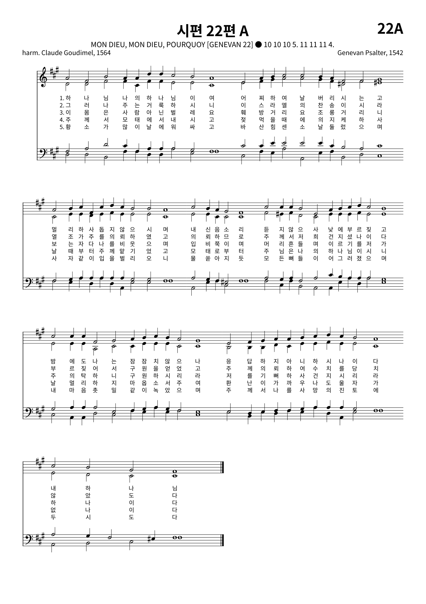

Psalm 22A
MON DIEU, MON DIEU, POURQUOY [GENEVAN 22] · 10 10 10 5. 11 11 11 4.
English title: My God, O Why Hast Thou Forsaken Me?
Tune: Genevan Psalter, 1542 · Harmony: Claude Goudimel, 1564 · Lyrics: Korean adaptation of Psalm 22 from the Korean Revised Version (AI draft adaptation · not yet theologically reviewed) · 5 stanzas
Psalm 22 is divided into 2 tunes: A B · This tune contains stanzas 1–5 of the Psalm 22 lyrics.
Score PDF MusicXML (for printing) MusicXML (for accompaniment, with prelude and repeats) Read Psalm 22 (Korean Revised Version)
Score
← Psalm 21 ListAccompaniment (in preparation)Psalm 22B →
Lyrics (Korean)
Stanza 1
하나님 나의 하나님이여
어찌하여 날 버리시는고
멀리하사 돕지 않으시며
내 신음 소리
듣지 않으사 낮에 부르짖고
밤에도 나는 잠잠치 않으나
응답하지 아니하시나이다
내 하나님
하나님 나의 하나님이여
어찌하여 날 버리시는고
멀리하사 돕지 않으시며
내 신음 소리
듣지 않으사 낮에 부르짖고
밤에도 나는 잠잠치 않으나
응답하지 아니하시나이다
내 하나님
Stanza 2
그러나 주는 거룩하시니
이스라엘의 찬송이시라
열조가 주를 의뢰하였고
의뢰하므로
주께서 저희 건지셨나이다
부르짖어서 구원을 얻었고
주께 의뢰하여 수치를 당치
않았도다
그러나 주는 거룩하시니
이스라엘의 찬송이시라
열조가 주를 의뢰하였고
의뢰하므로
주께서 저희 건지셨나이다
부르짖어서 구원을 얻었고
주께 의뢰하여 수치를 당치
않았도다
Stanza 3
이 몸은 사람 아닌 벌레요
훼방거리요 조롱거리니
보는 자 다 나를 비웃으며
입 비쭉이며
머리 흔들며 이르기를 저가
주 의탁하니 구원하시리라
저를 기뻐하사 건지시리라
하나이다
이 몸은 사람 아닌 벌레요
훼방거리요 조롱거리니
보는 자 다 나를 비웃으며
입 비쭉이며
머리 흔들며 이르기를 저가
주 의탁하니 구원하시리라
저를 기뻐하사 건지시리라
하나이다
Stanza 4
주께서 모태에서 내시고
젖 먹을 때에 의지케 하사
날 때부터 주께 맡기었고
모태로부터
주님은 나의 하나님이시니
날 멀리하지 마옵소서 주여
환난이 가까우나 도울 자가
없나이다
주께서 모태에서 내시고
젖 먹을 때에 의지케 하사
날 때부터 주께 맡기었고
모태로부터
주님은 나의 하나님이시니
날 멀리하지 마옵소서 주여
환난이 가까우나 도울 자가
없나이다
Stanza 5
황소가 많이 날 에워싸고
바산 힘센 소 날 둘렀으며
사자 같이 입을 벌리오니
물 쏟아지듯
모든 뼈들이 어그러졌으며
내 마음 촛밀 같이 녹았으며
주께서 나를 사망의 진토에
두시도다
황소가 많이 날 에워싸고
바산 힘센 소 날 둘렀으며
사자 같이 입을 벌리오니
물 쏟아지듯
모든 뼈들이 어그러졌으며
내 마음 촛밀 같이 녹았으며
주께서 나를 사망의 진토에
두시도다